Red Panda (Habre)
-
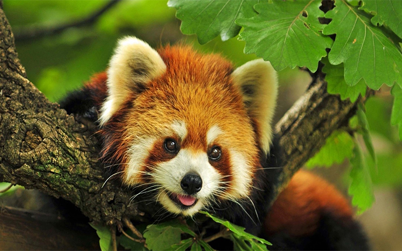
Ailurus fulgensThe name ‘Red Panda’ came from Nepalese word ‘Nigalya ponya or Habre’ which mean ‘Bamboo Eater’. It is also known as the ‘Lesser Panda’ or ‘Red Cat Beer’ or ‘Shining Cat’. The Red Panda is one of the endangered species of animal. The fame and popularity of the Red Panda has grown from its unique appearance and from the fact that the press in several countries has devoted much attention to the fate of pandas in various Zoos in the world.
The Red Panda is mainly found in temperate forests in the Himalayas (2,200m-4,800m) altitude inhabiting areas of moderate temperature (10c°-250c°). Especially, The Red Panda ranges from in the foothills of Nepal, in the west to China in the east or southern china (Sichuan and Yunnan). It also found in the northern Inda, southern Tibet, Bhutan and in the northern mountains of Myanmar. It prefers mountains mixed deciduous and conifer forests, especially with old trees and dense understory of Bamboo. It is an excellent climber and forages largely in trees. It is specialized as a bamboo feeder with strange, curved and sharp semi-retractile claws, standing in word for grasping of narrow trees branches leaves and fruit. It also used to eat berries, fruits, mushrooms, roots, acorns, lichen and grasses too. Occasionally it eats rides, fish, eggs, small rodents and insects.
Snow Leopard (Hiu Chituwa)
-
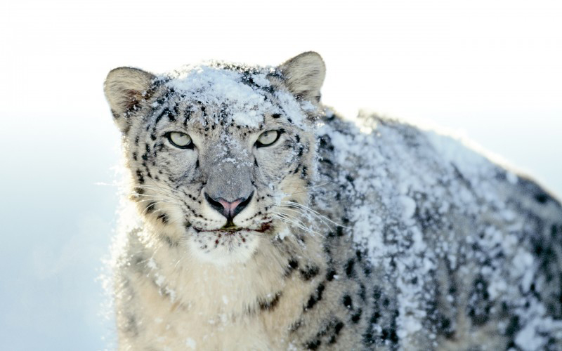
Panthera unciaSnow leopard population estimate was based on the model describing the relationship between sign (scrape) encounter rates, the snow leopard numbers assessed through genetic analysis and the habitat suitability assessment. "This model is useful for providing relatively good estimates of populations at landscape scales, when the conservation actions are urgently needed and when data gathering poses a challenge to developing and implementing conservation strategies," says Dr. Shrestha.
Bengal Tiger (Bagh)
-
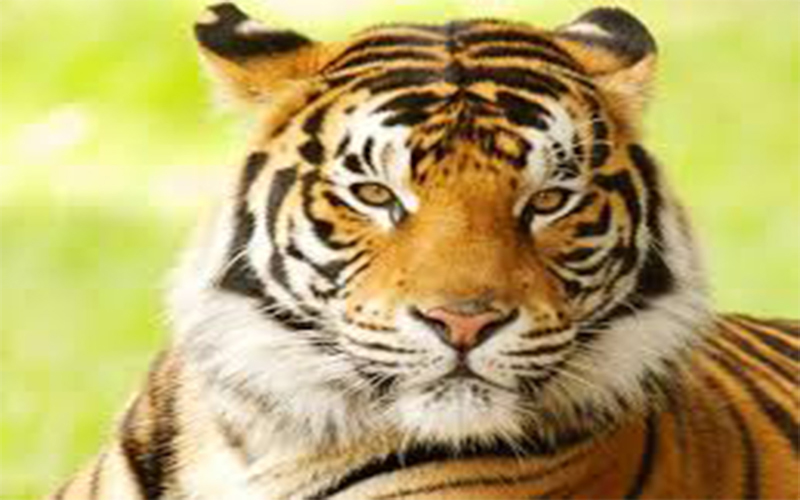
Panthera tigris tigrisDescription Higher classification: Tiger Mass: 220kg (male) Height: 90-110cm (At Shoulder) Length: 2.7-3.1m (male) Gestation period: 100-110 d Rank: Subspecies The tiger population in the Terai of Nepal is split into three isolated subpopulations that are separated by cultivation and densely settled habitat. The largest population lives in Chitwan National Park and in the adjacent Parsa Wildlife Reserve encompassing an area of 2,543 km2 (982 sq mi) of prime lowland forest. To the west, the Chitwan population is isolated from the one in Bardia National Park and adjacent unprotected habitat further west, extending to within 15 km (9.3 mi) of the Shuklaphanta Wildlife Reserve, which harbours the smallest population. The bottleneck between the Chitwan-Parsa and Bardia-Sukla Phanta metapopulations is situated just north of the town of Butwal.
As of 2009, an estimated 121 breeding tigers lived in Nepal. By 2010, the number of adult tigers had reached 155. A survey conducted from December 2009 to March 2010 indicates that 125 adult tigers live in Chitwan National Park and its border areas covering 1,261 km2 (487 sq mi). Between February and June 2013, a camera trapping survey was carried out in the Terai covering an area of 4,841 km2 (1,869 sq mi) tiger habitat. The country’s tiger population was estimated at 163–253 breeding adults comprising about 127 tigers in the Chitwan-Parsa protected areas, about 54 in the Bardia-Banke National Parks and about 17 in the Shuklaphanta Wildlife Reserve.
One horned Rhino (Gaida)
-
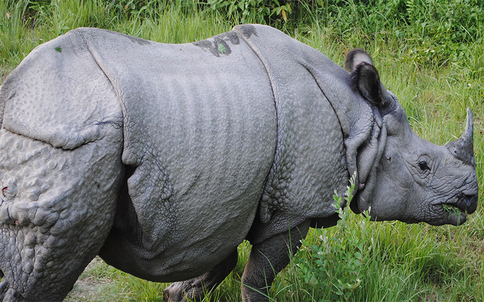
Rhinoceros unicornisOne horned rhinoceros is the largest of the three Asian rhinos, with a length of about 10 feet (3.8m), height of 5.5 feet (1.7m), and a weight of about 2.2 metric tons (2,200 kg). It was once found across the entire northern part of the Indian sub-continent.
Today there are fewer than 2,400 greater one-horned rhinos left in the wild, with the major populations in Royal Chitwan National Park in Nepal and Kaziranga National Park in India. Nepal Rhino Count in 2000 recorded 542 individuals within an annual population growth rate of 3.8%.
Greater one-horned rhinos are found in alluvial plain grasslands, where the grass can grow up to 26 feet (8 meters) tall, and in the adjacent swamps and forests. However, as the habitat of rhinos is diminishing due to human impact, rhinos are now often found in cultivated areas, pastures and modified woodlands. In addition to increasing loss of habitat, another major threat to the rhino is poaching. The horns of rhinos - which are made up of the same substance as fingernails (the protein keratin) - are sought after for traditional Asian medicines.
Himalayan Musk Deer (Kasturi Mriga)
-

Moschus chrysogasterMusk Deer is a mammal of higher Himalaya so it is also called Himalayan musk deer.
Musk deer ‘Moschus chrysogaster’ is one of six deer species of Nepal and in Asia; it is distributed in Afghanistan, Bhutan, China, India, Myanmar, Nepal, and Pakistan.
In Nepal, it is found in the Annapurna Conservation Area (ACA), Kanchenjunga Conservation Area (KCA), Sagarmatha, Langtang, Shey Phoksundo, Rara, Khaptad and Makalu Barun National Parks and Manaslu Conservation Area, where a major problem is poaching.
In these areas, they are distributed in Alpine forest and the vegetation is oak, fir, rhododendron, blue pine, juniper, grass, lichens and scrub between elevations of 2,200 to 4,300 meters (7,250-14,200 feet) on the eastern and southern edge of Tibet and the southern slopes of the Himalayas.
M. chrysogaster usually lives in forests with moderate to steep slopes. Himalayan Musk deer are essentially solitary animals having 12-20 year life span.
Dolphin (Sons)
-
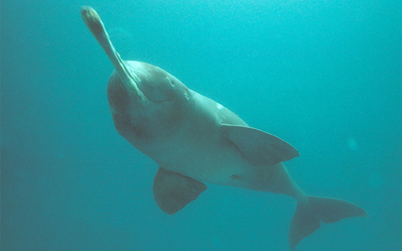
Plantanista gangeticaSouth Asian River Dolphins are known by various other names like Ganges River Dolphin, Blind River Dolphin, Side-Swimming Dolphin, Gangetic Dolphin, Ganges Susu, Shushuk, Bhulan, Indus Dolphin and Indus Blind Dolphin. Ironically, the number of dolphins found here in Nepal is fewer than the names they are known by. The locals who have seen them don’t know what they are and believe it is just a big fish, which they are not, they are mammals.
Mahakali, Koshi, Karnali Rivers and its tributaries once used to be home to these beautiful dolphins. But the situation has changed drastically during recent years with dangerous decline in the population. There are many contributing factors that lead them to the brink of extinction ending them in the endangered list in IUCN’s (International Union for Conservation of Nature) Red List of Threatened Species.
Swamp Deer (Barasingha)
-
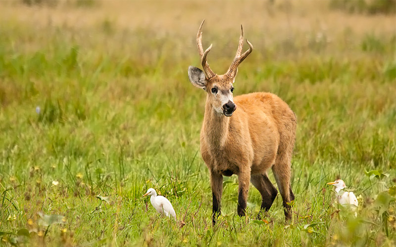
Cervus duvauceliThe Golden Swamp Deer also known by the Nepali name Barasingha. They are a very sociable animal, and often found in large herds grazing amongest grassland in the wildlife region. The name Barasingha is derived from their large antlers (Bara meaning 12 and singha meaning horn), as their antlers can have as many as 12 points or horns. The swamp deer is a very alert animal and is always wary of its many predators, even while resting.
Asiatic Elephant (Jangali Hatti)
-
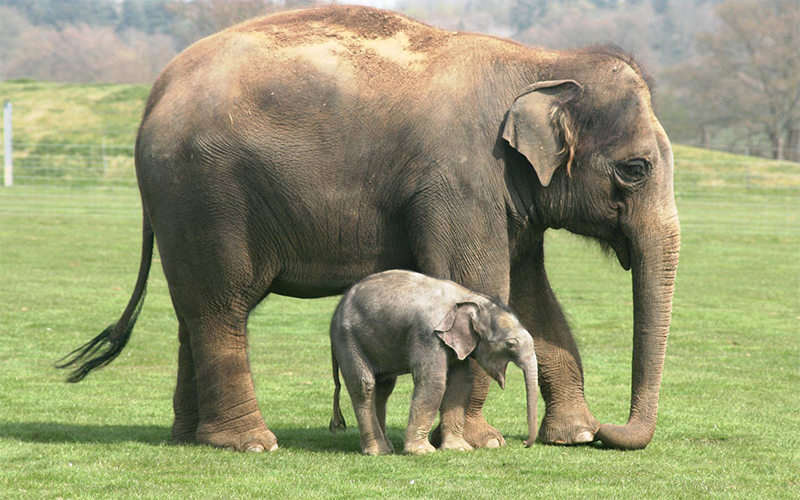
Elephus maximusThe Asian elephant (Elephas maximus) is the largest of all mammals in Nepal. Its shoulder height varies from 250 to 300cm, and a male elephant can weigh up to 5,000 kg. Elephants have an excellent memory and a long lifespan - similar to that of humans. Elephants are very sociable. They live in groups of related animals, led by a mature female. Members of the same group communicate with each other using sound, scent and touch.
Elephants are capable of producing infrasonic sounds (low-pitched sounds that fall below the hearing range of humans) that are especially useful for communicating over long distances, since the lower-pitched the sound is, the further the sound waves can travel. The trunk, which is an elongated nose with nostrils situated at the very end, is a delicate tool. It can be used for a wide array of tasks, from moving heavy tree trunks to picking up objects as small as a peanut. The Asian elephant has a single "finger" on the upper lip of the trunk.
Four horned Antelope (Chauka)
-
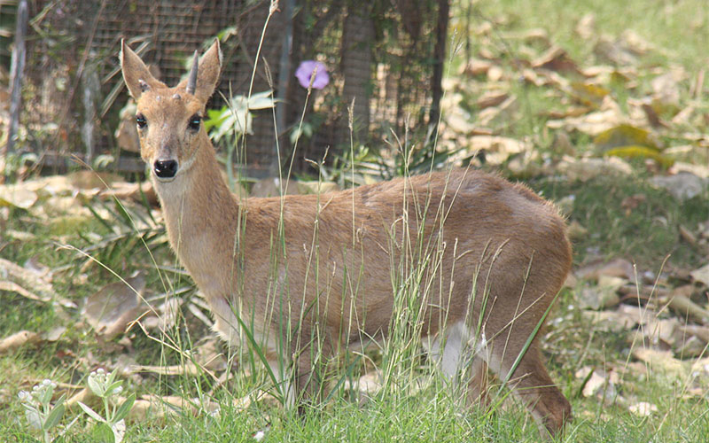
Tetracerus quadricornisFour-horned antelope are generally solitary animals, although they are occasionally found in groups of up to four individuals. They are sedentary, rather than nomadic, and may defend exclusive territories. Males tend to become very aggressive towards other males during mating seasons. Adults make alarm calls that sound like a husky 'phronk', and other, quieter calls to communicate with young or other adults. They also communicate through scent marking, leaving piles of droppings in their territories, and marking vegetation using large scent glands in front of the eyes.
Black Buck (Krishna Shar)
-
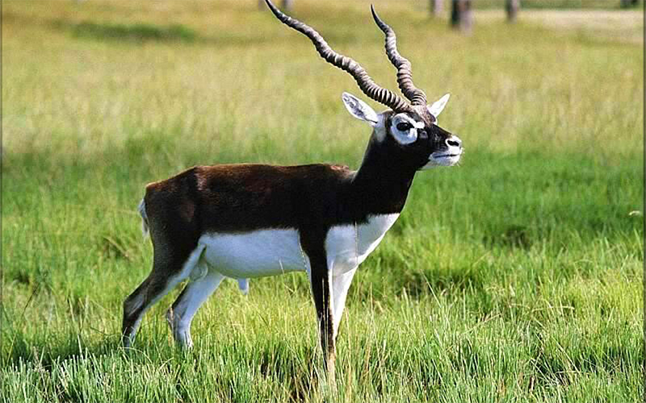
Antilope cervicapaIn Nepal, the last surviving population of blackbucks is found in the Blackbuck Conservation Area south of the Bardia National Park. In 2008, the population was estimated at 184.
The blackbuck is the only living species of the genus Antilope. Its generic name stems from the Latin word antalopus, a horned animal. The specific name cervicapra is composed of the Latin words capra, she-goat and cervus, deer.
Assamese Monkey (Asami Rato Bandar)
-
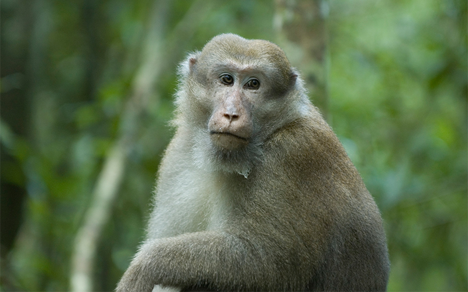
Macaca assamensisA species of Old World monkey, the Assam macaque (Macaca assamensis) is a rather thick-set macaque with a relatively short, well-haired tail. However, the length of the tail of this species can vary, with some individuals possessing shorter tails which do not reach to the knee, and others having much longer tails.
The fur colour of the Assam macaque ranges from a deep reddish-brown or dark brown to a lighter yellow-brown, with the front part of the body tending to be paler than the rear part. The underparts of the body are a paler, more whitish colour, and the bare skin on the face varies between dark brown and purplish, with paler pinkish to whitish-yellow skin around the eyes. The Assam macaque’s whiskers and beard are fairly well developed, and it also has cheek pouches that are used to store food when foraging.
Grey WOlf (Bwanso)
-

Canis lupusGrey wolves hunt singly or in pairs, sometimes in groups of three, but only rarely in larger numbers. They are not nocturnal but rest during the heat of the day. They feed largely on hares throughout the year, marmots in summer, and large numbers of goa and sheep in winter, when deep snow impedes the mobility of ungulates. They rarely succeed in catching bharal, due to the rougher ground they frequent.
Brown Bear (Himali Rato Bhallu)
-
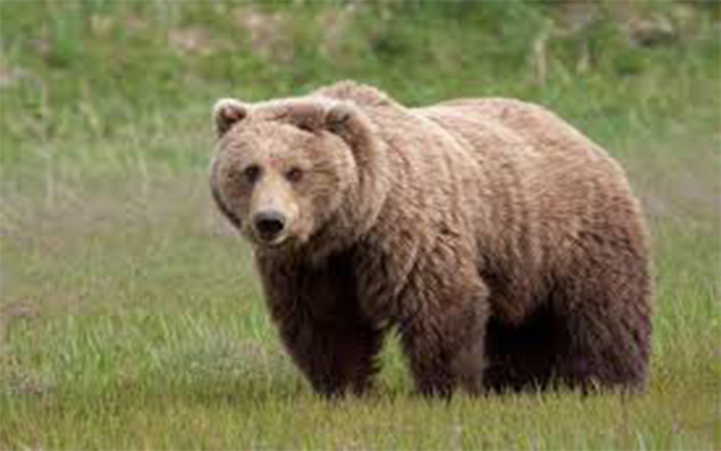
Ursus arctosHimalayan Brown Bears exhibit sexual dimorphism. Males range from 1.5m up to 2.2m (4 ft 11in - 7 ft 3in) long, while females are 1.37m to 1.83m (4 ft 6 in - 6 ft) long. They are the largest animals in the Himalayas and are usually sandy or reddish-brown in colour.
The bears are found in Nepal, Tibet, the far north of India, and the north of Pakistan. They are already speculated to have become extinct in Bhutan. Himalayan Brown Bears are omnivores and will eat grasses, roots and other plants as well as insects and small mammals they also like fruits and berries. They will also prey on large mammals, including sheep and goats. Adults will eat before sunrise and later during the afternoon.
Clouded Leopard (Bwanso Chituwa)
-
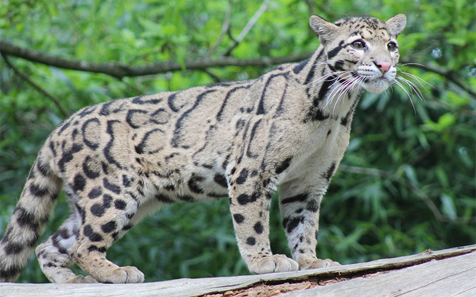
Pardofelis nebalosaThese cats are found In Nepal, Bhutan, India, China, Indonesia, Laos, Malaya Peninsula, Myanmar, Thailand and Vietnam. Clouded leopards are most associated with primary evergreen tropical forests, but sightings have been made in secondary and logged forests as well as grasslands, scrub and mangrove swamps. Clouded leopards prey upon rodents and birds occupying the middle layer of the canopy. They also prey upon small dear, pigs, monkeys and wild boar.
Wild Yak (Jangali Chauri)
-
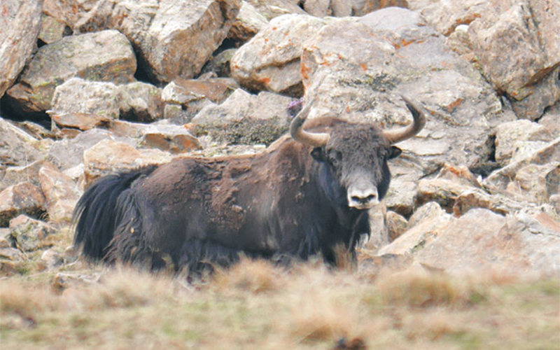
Bos grunniens (B. mutus)The wild yak has a dense undercoat of soft, close-matted hair which is covered by generally dark brown to black outer hair. Its long, shaggy coat reaches almost to the ground. The wild yak can weigh up to 1000 kg (2200 lb) with a shoulder height of over 2 m (6.5'). It occurs in treeless uplands, including plains, hills, and mountains, from as low as 3200 m (10,500') up to the limit of vegetation at about 5400 m (18,000'). It stays in high areas with permanent snow during the warmer months of August and September, and spends the rest of the year at lower elevations. The wild yak grazes on grasses, herbs and lichens. Ordinarily it gathers in groups of 10 - 30 or more, but it may occasionally be observed in large groups of 100 - 200.
Wild Water Buffalo (Arna)
-
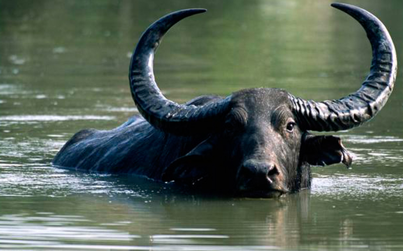
Bubalus arnee (B. bubalis)The Asiatic Wild Water Buffalo Bubalus arnee is an endangered species restricted to South and Southeast Asia. Nepal’s only population survives in the Koshi Tappu Wildlife Reserve which is located on the floodplain of the Koshi River, a tributary of Ganga. This species is under threat due to high anthropogenic pressure ranging from habitat deterioration to hybridization with domestic buffalo. Yet, the population has grown from 63 in 1976 to 219 in 2009, despite the decline in the calf/cow ratio. The present study conducted in 2009 used the block count method. The count showed the presence of a backcrossed population of 74 in addition to the total of 219 individuals. At present, a number of conservation and livelihood interventions have been undertaken to safeguard the biodiversity, particularly the wild buffalo population in the Koshi Tappu Wildlife Reserve. The community-based sustainable management approach benefiting both conservation and livelihood of local people is necessary to ensure the long term conservation of the species.
Hispid Hare (Sespod Kharayo)
-
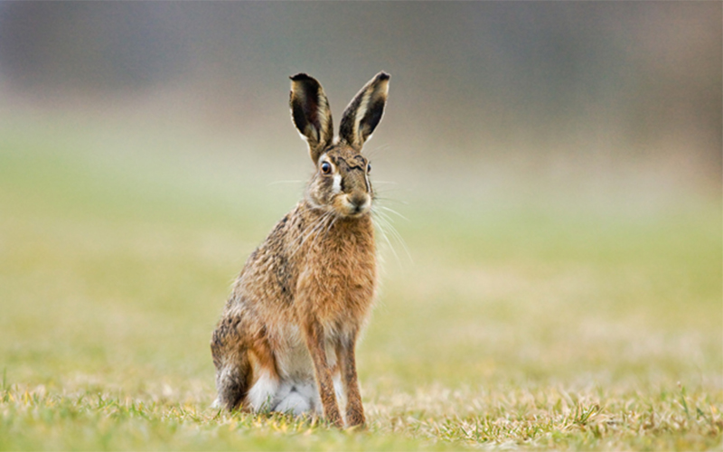
Caprolagus hispidusThe hispid hare is also called the "bristly rabbit" because it has coarse, dark brown hair. It's ears are short, and its back legs are not much larger than the front legs. It weighs about 2.5 kg (5.5 lb). It prefers tall grass-scrub savanna, in flat, well-drained and thinly forested country. It is not gregarious, but sometimes lives in pairs. Its diet consists mainly of bark, shoots and roots of grasses, including thatch species, and occasionally crops.
The hispid hare was formerly found from Uttar Pradesh to Assam (India) along the Himalayan foothills, and south to Dacca in East Pakistan (now Bangladesh). In 1964, it was feared by some to be extinct, or nearly so, but by 1966 it was thought still to exist in a few isolated parts of its range along the foothills of the Himalayas in Uttar Pradesh, Bihar, West Bengal and Assam. In 1990 the areas from which it had been recently recorded included Assam, northwest Bengal, northwest Bihar, Madhya Pradesh, Uttar Pradesh, and the terai area of southern and southwest Nepal.
The main reasons for its decline include habitat loss, mainly for cultivation, forestry, grazing and the burning of thatch; human settlement; hunting for food and to protect crops; and predation by dogs. In addition, human-induced changes in seasonal flooding have favored the later stages of vegetation succession which the hispid hare does not prefer.